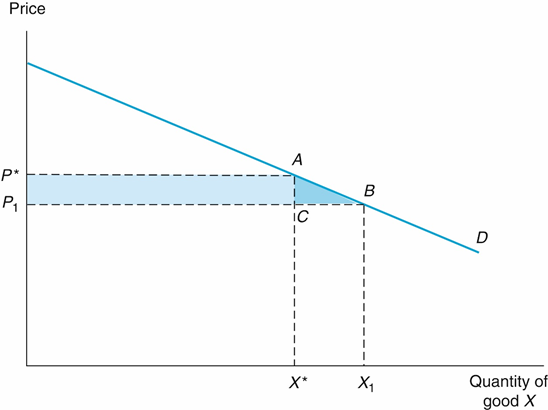
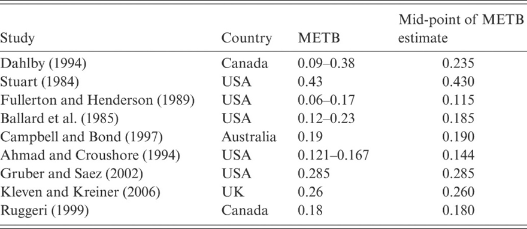

3 Microeconomic Foundations of CBA
Today’s Goals:
- Review Problem Set 1
- Econ 101 Crash Course
- CBA of the Day
3.1 Introduction
Why do we need background in Econ 101?
Recall goal of CBA: improve allocative efficiency (i.e. resources used in their most productive capacity)
- Kaldor-Hicks Efficiency vs. Pareto Efficiency
We need some theory if we want to evaluate whether a proposed policy will increase efficiency
In a perfectly competitive market, allocative efficiency happens automatically
- Natural, self-interested behavior of consumers and producers will achieve optimal allocation of resources
- Shortage and surplus are quickly resolved through price adjustments
No efficiency grounds for intervention
So the typical justification for intervention is a market failure.
From a practical standpoint, Econ 101 will help us determine:
- Whether to include an impact in our CBA
- How to monetize the impacts we include
3.2 Some Economics 101 (aka geometry about money)
Net social benefits: \(NSB = B - C\)
Only do projects if \(NSB > 0\).
In CBA we measure benefits \((B)\) based on willingness to pay (WTP).
- This is captured by the behavior of consumers (the demand curve)
We measure costs \((C)\) based on opportunity cost.
- This is captured by the behavior of firms (the supply curve)
3.2.1 Demand Curves
What is a demand curve? Why does it slope down?
Willingness To Pay (WTP) is the curve. Consumer surplus is the area between the price and the curve.

What happens to consumer surplus when the price changes?

\(\Delta CS = Area(Rectangle) + Area(Triangle)\)
\(\Delta CS = (P^*-P_1)X^* + \frac{1}{2}(P^* - P_1)(X_1-X^*) = \Delta P X^* + \frac{1}{2}\Delta P \Delta X\) (Equation 3.2)
3.2.1.1 Price Elasticity
The steepness of the demand curve indicates its responsiveness. Unfortunately we typically don’t know what the demand curve looks like. More likely to know its elasticity.
Elasticity: \(E_d = \frac{\%\Delta X}{\%\Delta P} = \frac{P^*}{X^*}\frac{\Delta X}{\Delta P}\)
| Range | Category |
|---|---|
| 0 | Perfectly inelastic |
| 0.01 - 0.99 | Somewhat inelastic |
| 1 | Unit Elastic |
| \(>\) 1 | Elastic |

Elasticity
Knowing the demand elasticity of a good matters, because it affects the change in consumer surplus from a policy:
- Elastic demand: large changes in Q -> large changes in CS
- Inelastic demand: no change in Q -> no change in CS
Exercise:
Is demand for the following goods likely to be highly elastic, somewhat elastic, or inelastic?
- Apples
- Salt
- Gasoline
Plug elasticity into the rectangle-triangle equation (3.2), and you get equation (3.4):
\(\Delta CS = X^*\Delta P + \frac{E_dX^*(\Delta P)^2}{2P^*}\)
First term represents a transfer of surplus. Second term represents a deadweight loss from consumers being priced out (if it’s a price increase).
3.2.1.2 Taxes
Suppose we’re the government (or maybe we have a government grant). In either case, our money ultimately derives from taxes. What is the cost of collecting our revenue through taxes?
Consider the rectangle-triangle diagram. The price change could represent a tax we placed on that particular market (maybe a sales tax on a good, or an income tax on work hours, or a property tax on land).
The rectangle is the tax revenue we actually collect. The triangle is deadweight loss.
Excess Tax Burden (aka leakage): \(\frac{DWL}{Revenue} = \frac{E_dt}{2P^*(1+\Delta X)/X^*} \approx \frac{E_dt}{2P^*}\)
Exercise:
Will the deadweight loss from taxation be larger or smaller for highly elastic goods? Why?
3.2.2 Supply Curves
“Corporations are people, my friend.”
-Mitt Romney
Firms/businesses/corporations are composed of people, and their welfare is included in a cost-benefit analysis in the same way you would include any other actor with standing.
More specifically, if we want to measure the full costs of a policy, we need a full accounting of opportunity costs, what we must give up if we allocate resources towards the policy. Supply curves track the marginal cost of supplying a good.
Why supply curves slope up:

Producer surplus:
Supply Curves: Producer Surplus and Opportunity Cost
Exercise:
For the following goods, is supply likely to be highly elastic, somewhat elastic, or inelastic?
- Pencils
- Farm Land
- Social Workers (more or less elastic than Corporate Tax Accountants?)
3.2.3 Market Equilibrium
If \(SS = PS + CS\), then \(P^*\) is the price at which social surplus is at its maximum (allocative efficiency).

3.2.4 Government Surplus
What happens when we change prices (e.g. a target pricing policy)? Add GS to SS equation above.


3.2.5 Marginal Excess Tax Burden (METB)
Marginal Excess Tax Burden (METB): how much it costs to raise a dollar in government revenue.
Exercise:
Why is the METB of property taxes less than the METB of income taxes?

If your program requires an increase in taxes, then our social surplus calculation should reflect the marginal excess tax burden:
\(SS = CS + PS + (1+METB)GS\)
(Note that this is symmetric: a program that increases govt revenues means a decrease in required taxation, so it also gets the multiplier.)
3.3 CBA of the Day
TBD